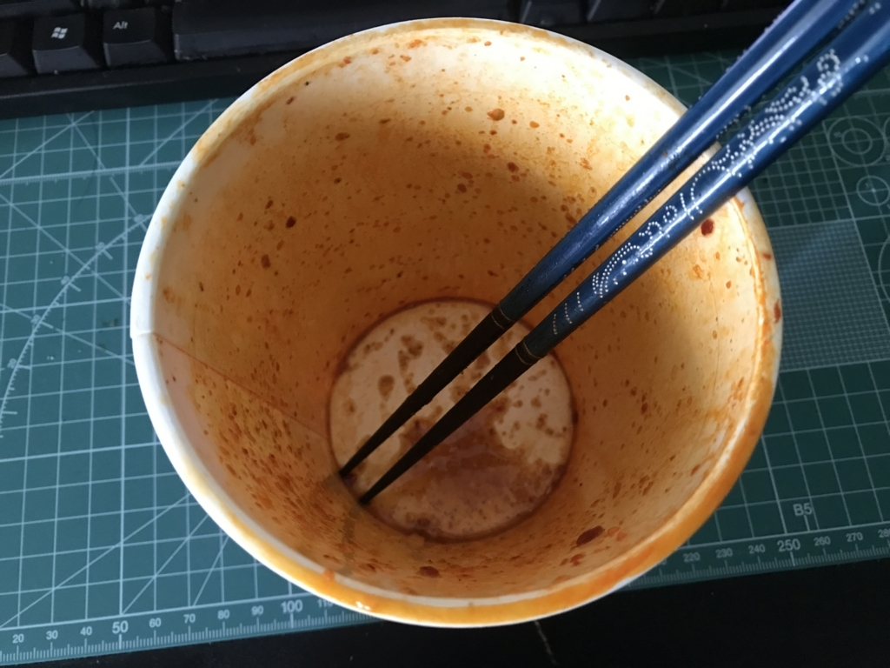

日清食品『蒙古タンメン中本 北極ラーメン 激辛味噌』
執筆日時：

毎度要らんことしかせえへん某氏から、また変なのが送られてきた。
@daruyanagi 荷物届いたやろ、レビュー頼むで
— しばやん (@shibayan) 2017年7月17日
もうケツの穴が破れそうやけど、頑張って食べた。

カップの上についてる“激辛オイル”ってのが、まずヤバい。開けてみたら、ラー油の赤いところだけを抽出したかのような、邪悪な液体だった。

お湯を注いで、5.5分待機。最近のカップ麺って待機時間長くない？ フタを開けると、噴き出した湯気が鼻孔を突き、猛烈に咳き込んだ。湯気が辛い。こんなに辛くして頭がおかしいんじゃないかと思うんだけど、よだれが沸いてくる俺もたいがい頭おかしい。

食べてみると……“辛辛魚”の袋麺ほどのパンチはなくて、まぁまぁ、美味しいって感じ。袋タイプと比べるのは酷かもしれないけど、麺も“ぬーどる”って感じやね。でも、全然、フツーに美味しくて、ちゃんとスープまで完食しました。――翌日恒例の下痢も……大したことがない。“辛辛魚”はマジで尻の穴が焼けるかと思ったんだけど……辛さが弱いのか、それとも俺の尻の穴が鍛えられてきたのか。
全部食べたら、今度東京でなんかご馳走したるわ
— しばやん (@shibayan) 2017年7月17日
ともあれ、次に東京行くのが楽しみです。

- 出版社/メーカー: 日清食品
- メディア: その他
- この商品を含むブログを見る